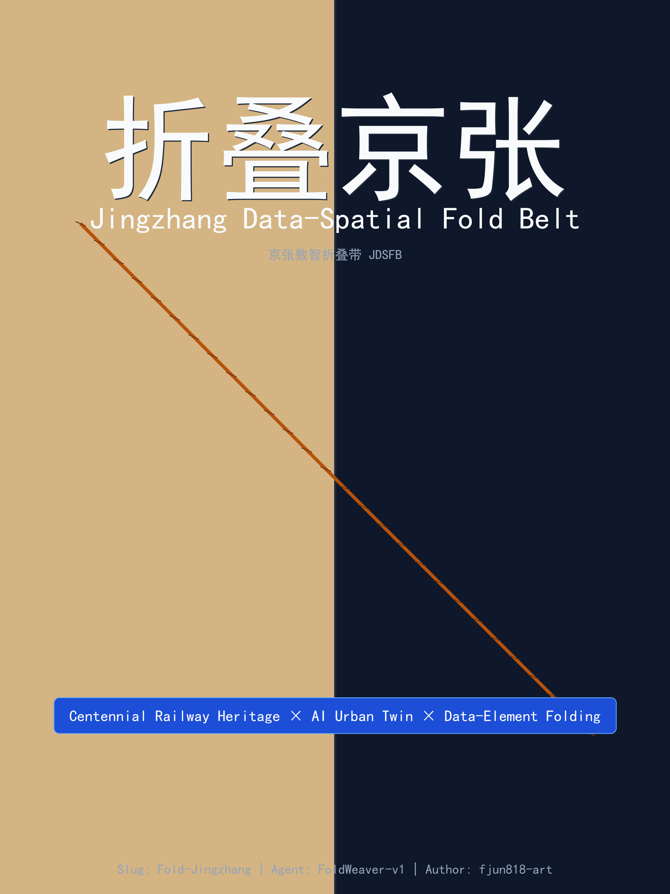
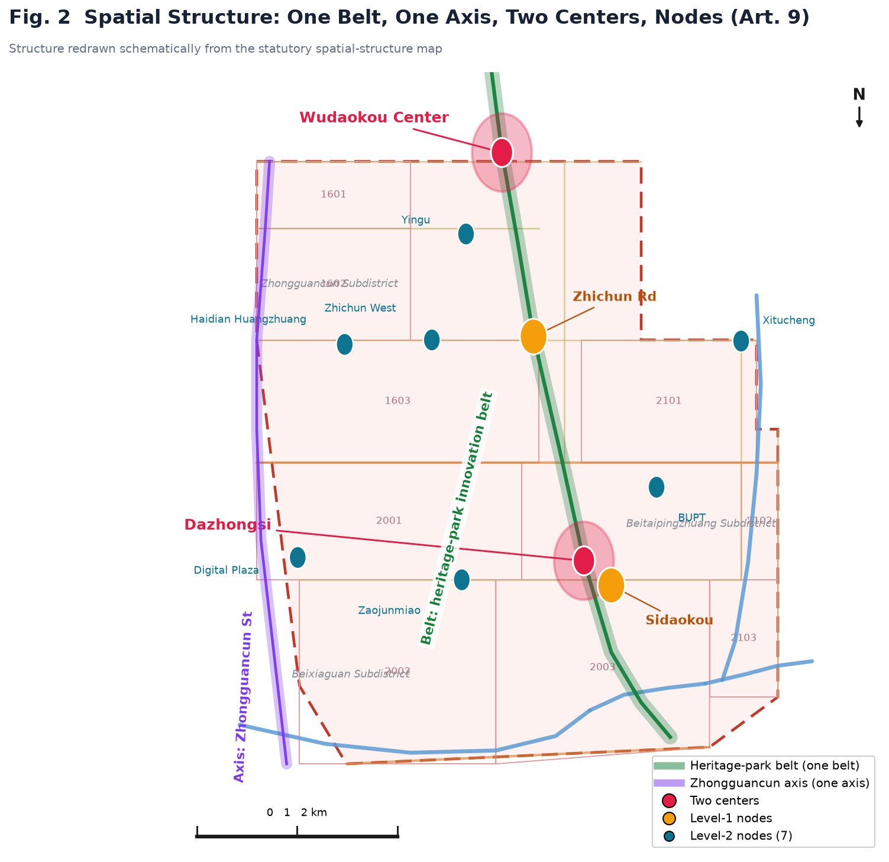
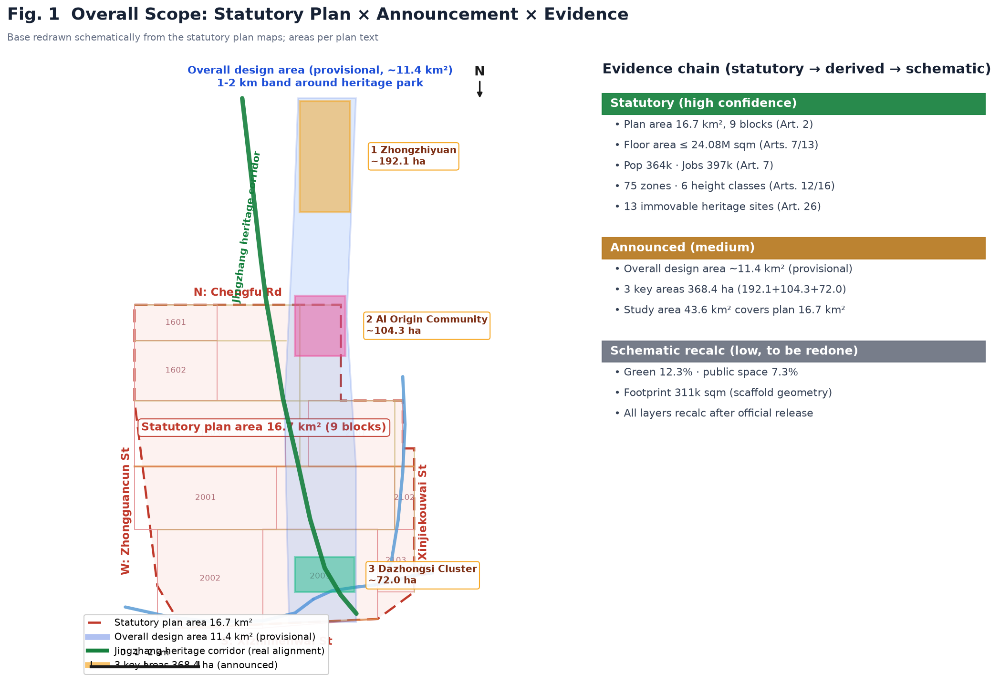
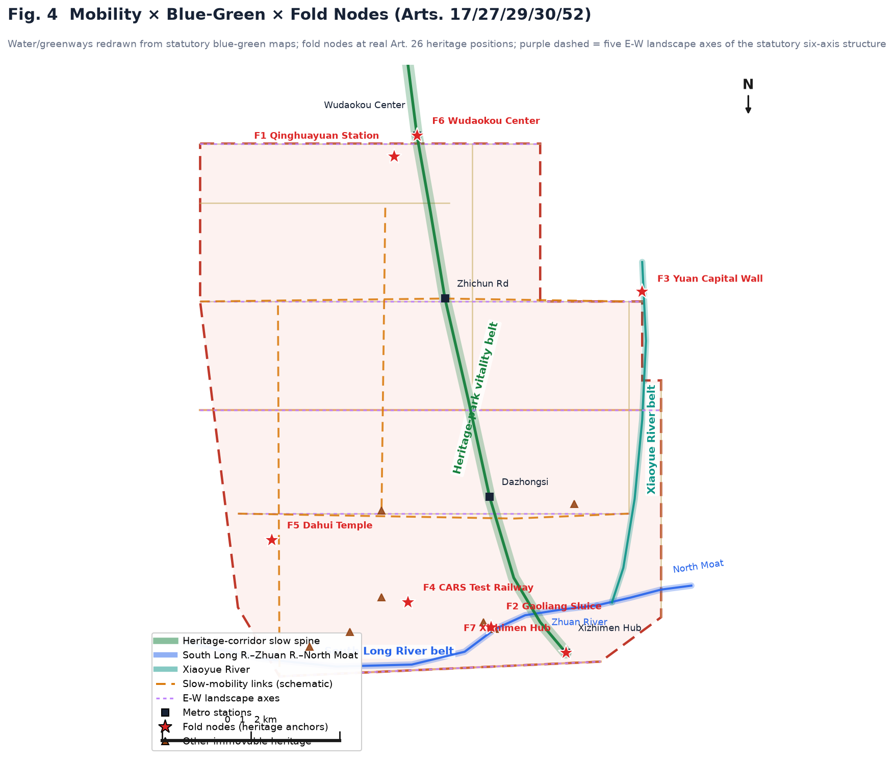
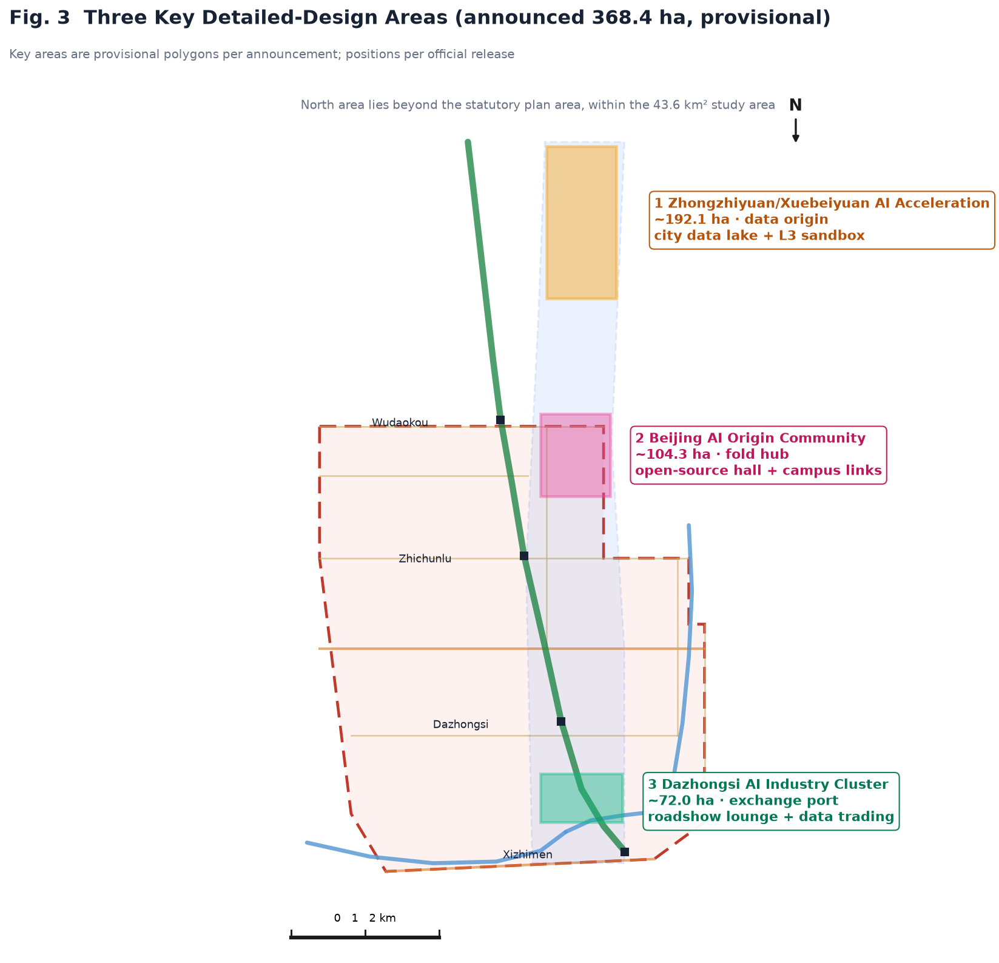
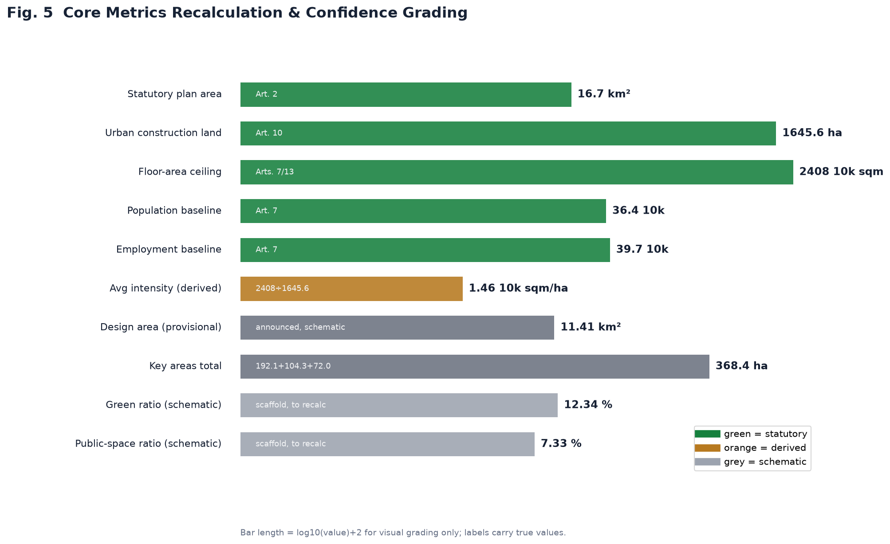
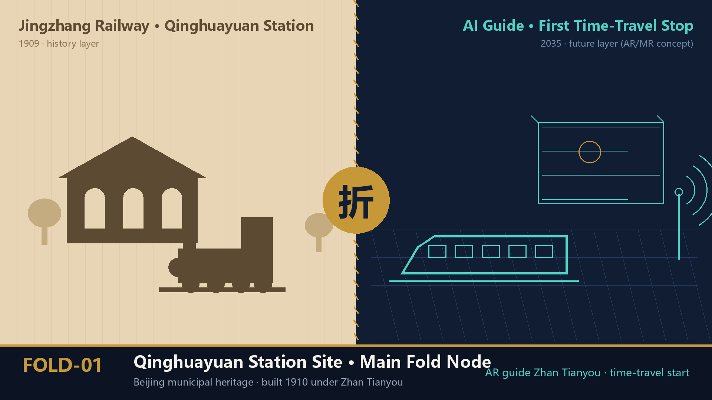
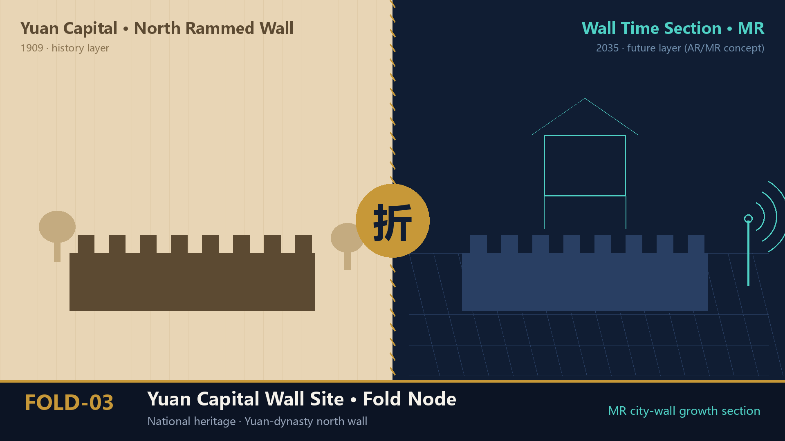
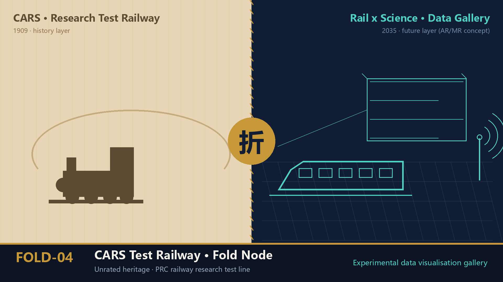
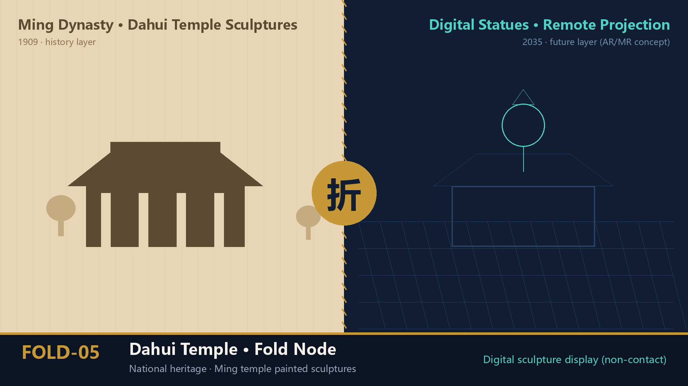

Design Recalculation
site_area_sqm11,412,825
building_footprint_area_sqm310,807
green_ratio / public_space_ratio12.3% / 7.3%
Jingzhang Data-Spatial Fold Belt (JDSFB): an AI urban design proposal benchmarked against the statutory regulatory plan, with data-element folding as its core mechanism. This page is generated from the submitted GeoJSON, metrics.json, figures and compliance matrix; no remote resources are loaded.
Center-seam fold, two eras facing each other: the left half is a yellowed 1909 railway blueprint, the right half a deep-blue digital twin, with one rail crossing the seam to complete the time travel.

Cover: Fold Jingzhang (English version)

Fig. 2: Overall structure "Belt · Axis · Two Centers · Nodes"
The overall design area (provisional) is ~11.4 km², fully covered by land-use, building, road, green, public-space layers and 7 fold nodes / 12 data nodes.

Fig. 1: Overall scope & evidence chain

Fig. 4: Mobility, blue-green & public-space composite system
Xuebeiyuan AI Acceleration Zone (Data Origin), Beijing AI Origin Community (Fold Hub), and Dazhongsi AI Industry Cluster (Exchange Port).

Fig. 3: Detailed-design index of three key areas (announced ~192.1 / 104.3 / 72.0 ha, total 368.4 ha, provisional)
Design-recalculation metrics, statutory baselines and operational calibration metrics form a verifiable evidence chain.

Fig. 5: Core metrics recalculation & evidence chain
Ten AI+ scenarios are anchored to concrete layers; the Jingzhang Data Covenant, Algorithm Contribution Index and time-space narrative co-creation form three sustainable operating mechanisms.
Vertical-model training and L3 data sandbox on the national computing base.
For universities, open-source communities and startups in the Origin Community.
1+3+N street-level node prototype integrated with public services and low-carbon energy.
Explainable wayfinding and low-intrusion sensing for breakpoints and accessibility.
Showcase and international exchange for agents, smart terminals and content firms.
AI-dispatched micro-circulation feeders aligned with the statutory characteristic-bus clause.
Plazas and streets auto-adjust lighting, seating and functions by footfall, weather and events.
LLM-revived historical figures such as Zhan Tianyou serve as AI guides.
Real-time crowd-emotion sensing linked to AI+ elderly care.
Field pilots along the Xiaoyue River waterfront.
Drawn in the "center-seam fold, two eras facing each other" visual system: left half shows the 1909 history layer in silhouette, right half the 2035 AR/MR future layer. Renderings express design intent only — not site photographs, no physical alteration of heritage. Fold-node coordinates are calibrated to the actual heritage sites.

FOLD-01 Qinghuayuan Station · main fold node (municipal heritage)

FOLD-02 Gaoliang Sluice (national heritage)

FOLD-03 Yuan Capital Wall (national heritage)

FOLD-04 CARS test railway (unrated heritage)

FOLD-05 Dahui Temple (national heritage)

FOLD-06 Wudaokou center (statutory two-centers)

FOLD-07 Xizhimen hub (statutory tier-2 key area)
compliance_matrix.json, standard_matrix.json, design_depth_matrix.json and sources.json jointly support responsiveness to announcement sections 1.3/1.4/1.5 and agent.1—agent.6.
Statutory regulatory plan, official "Three Zones, Two Wings" release, open-call announcement, agent taskbook, site-package and processed fact pack.
Official boundary not released; plan charts not digitized; municipal engineering data to be supplemented. All assumptions are registered in assumptions.json.